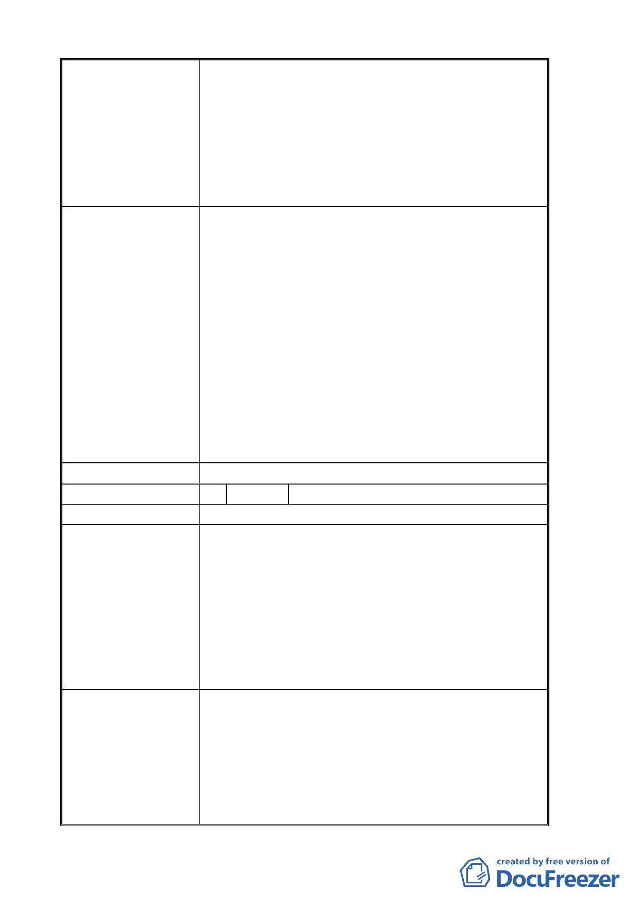

用地(國立政治大學)及保護區主要計畫案」及「擬
定臺北市文山區指南山莊大專用地(國立政治大學)
細部計畫案」中，和計畫案無關的交通改善計畫應
全部取消公展，以免造成社區恐慌與誤解。
(三)請都市發展局日後辦理都市計畫公聽會或是有關
「木柵二期重劃區與政治大學周邊地區整體規劃與
改善計畫案」之座談會，必須邀請選區議員、社區
管委會及社團代表將參加，避免黑箱作業。
申請單位回應意見
1. 本案經調查發現區內多為山坡地，為符合都市計畫法及土
地使用管制規定，避免不當開發利用，考量坡度安全維
護，坡度超過 30％以上地區應維持原始地貌，故將指南
山莊南邊 3 塊坡度超過 30％以上的地區劃設為保護區。
至於基地中央山坡地雖為坡度 30％以上不適合建築的地
區，但因為基地周圍皆為可開發利用的土地圍繞，無法獨
立分割，故本校亦將其變更為大專用地，用地變更範圍劃
定係經過審慎思考。
2. 台北市都市計畫委員會專案小組第二次會議決議將指南
山莊用地全部變更為大專用地。
3. 本案未來將配合都市更新進行地區環境調整，故提出交通
改善構想計畫，若本地居民未來無意願進行都市更新，則
可考量其他改善方案。
4. 本計畫所提增闢道路構想並未位於本次計畫範圍內，不涉
變更計畫內容，為避免誤解，將刪除該構想之相關內容。
委員會決議 同編號 1。
編 號 8 陳情人 陳清權
陳 情 理 由 抗議貴都市計畫委員不公！
建 議 辦 法 貴會做專業怎可本末倒置，指南山莊已限制周邊發展已
久，現在軍方遷移，正是周邊可發展以利民。現在怎又要
將周邊私人土地更改為保護區，私人土地又不是國有土
地，我們已受害長久，建議指南山莊更改為保護區或公園
才合適。因為國有土地一紙命令即可又不與民爭利。
指南山莊上方山坡地河邊怎能有住宅大樓這是財團土
地，是否有危險呢？山上蓋大樓山下卻要改為保護區是否
有圖利財團之行為？
貴委員會不要與民爭利，請高抬貴手謝謝。
申請單位回應意見
1. 本案經調查發現區內多為山坡地，為符合都市計畫法及土
地使用管制規定，避免不當開發利用，考量坡度安全維
護，坡度超過 30％以上地區應維持原始地貌，故將指南
山莊南邊 3 塊坡度超過 30％以上的地區劃設為保護區。
至於基地中央山坡地雖為坡度 30％以上不適合建築的地
區，但因為基地周圍皆為可開發利用的土地圍繞，無法獨
立分割，故本校亦將其變更為大專用地，用地變更範圍劃
定係經過審慎思考。
- 15 -